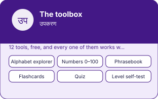

EkGuru › Learn Hindi › Tools
Free Hindi tools
🔊 Tap any speaker button to hear the words on this page spoken. Too fast or slow? Use the speed button at the bottom-right of the page.
12 tools that run entirely in your browser. Nothing to install, no account, no email, and nothing you do here is sent anywhere — progress is saved in your own device's storage or not at all.
All 44 letters, clickable, with a real word for each.
Numbers 0–100Every number in Devanagari, with a quiz.
Phrasebook69 phrases people actually say, searchable.
FlashcardsFive decks, spaced repetition, progress saved locally.
QuizTen questions, different every time.
Level self-testEight questions to place yourself honestly.
Typing helperType in English letters, get Devanagari.
Time plannerHow long Hindi will take at your real hours.
Verb explorerTwenty core verbs in three tenses.
Days, months, timeTelling the time, including the irregular ones.
Pronunciation trainerTwelve minimal pairs — the sounds that make an accent.
Vocabulary builder69 words grouped by situation, with a self-test.
Why these are worth more than another article
You can read about the Hindi alphabet, or you can click through all forty-four letters and see a real word for each. The second one is what people come back to, and coming back is the whole difference between learning a language and reading about one.
Everything here works without an account because there is nothing to gain by making you sign up. There is no server behind this site — these tools are HTML, CSS and a few kilobytes of JavaScript, which is also why they load instantly on a bad connection.
Flashcards will get you a thousand words. A quiz will confirm you know them. Neither will teach you to say something you have not rehearsed, to a person who is not waiting patiently — and that is the actual skill. One hour a week with a tutor is the cheapest way to get it.
Find a Hindi Guru Free Hindi guidesAlso on the site
The toolbox, in one picture
Every number and every word on this plate is taken from the tool below it, not drawn by hand: what you see here is what the tool holds.
